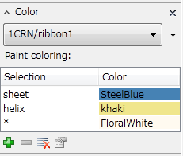
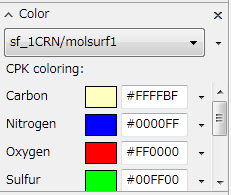
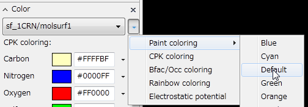

PostAlphaBlend
Efficient Rendering of Semi-transparent Objects¶
Since the days of CueMol1, semi-transparent display has been possible by setting the color transparency to less than 1, but particularly during POV-Ray rendering, there were the following problems:
- Rendering becomes extremely slow when there are semi-transparent (large) objects.
- The back surfaces of objects are correctly calculated. Also, when semi-transparent objects overlap, opacity increases.
While this is physically correct behavior, it makes the appearance cluttered and very difficult to see.
From CueMol2.0.1.X onwards, instead of calculating as semi-transparent during POV-Ray rendering, by compositing (as semi-transparent) after rendering, it has become possible to create clearer and more easily viewable figures more simply.
※In the current version (2.0.1.145), a bug has been found where rendering is not performed correctly when there are two or more semi-transparent objects. We are working diligently to fix this in the future. This has been somewhat improved in version 2.1.0.241.
Creating a Scene with Semi-transparent Objects¶
First, as an example, we'll create a scene with semi-transparent objects.
This can be created by following the steps below, but

{kind=link}
a pre-created qsc file can be downloaded from the above link.
Loading Molecules and Ribbon Display¶
Referring to the tutorial, load 1CRN from the web. At this time, set the renderer to be created as ribbon.
{kind=link}
Creating Molecular Surface and Display Settings¶
Furthermore, referring to Molecular Surface Generation, create the molecular surface of 1CRN, sf_1CRN. By default, the renderer molsurf1 of sf_1CRN is set to CPKColoring, but change the display as follows:
- Display the Color side panel (in the following, 1CRN/ribbon1 is selected)

- From the drop-down listbox, select sf_1CRN/molsurf1 (renderer molsurf1 of sf_1CRN) (a CPKColoring panel like the following will be displayed)

- Press the ▼ button next to the drop-down listbox and select PaintColoring→Default

The molecular view should look like the figure below.
{kind=link}
Setting Semi-transparent Display¶
Next, change the settings of the molsurf1 renderer to make it semi-transparent. Right-click on molsurf1 in the Scene side panel to display the context menu, and select "Properties..." from the menu (or double-click on molsurf1 in the Scene side panel).
This will display a dialog like the following:
{kind=link}
As shown in the figure, operate the slider to the right of Opacity to set the value to 0.5.
When you press the OK button to close the dialog, the molecular surface becomes semi-transparent as shown below:
{kind=link}
However, since OpenGL display cannot correctly show semi-transparency, it results in an odd display like the figure above.
★Furthermore, please set the background to white.
Performing Rendering in POV-Ray Rendering Window¶
Next, execute menu "Render" → "POV-Ray rendering..." to display the POV-Ray rendering window.
Here, confirm that the "Post-render alpha blending" checkbox is ON.
Then, change the Height to an appropriate size and press the Render button to start rendering. (For details on operating the POV-Ray rendering window, refer to the tutorial)
After rendering is performed twice, the two images are composited, and an image like the following is created. Even though it's performed twice, it's much faster than a single rendering with Post-render alpha blending turned off.
{kind=link}
Incidentally, the figure below shows the result of conventional semi-transparent rendering (Post-render alpha blending=off).
Generally, Post-render alpha blending tends to appear more transparent. Depending on the case, it may be necessary to adjust to a more visible value.